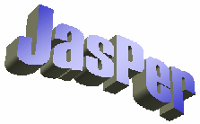

© Copyright 2000-2001 Michael David Adams.
(Version: $Id$)
JasPer is a collection of software (i.e., a library and application programs) for the coding and manipulation of images. Using the JasPer software, one can easily encode and decode image data in a number of popular formats. For example, the JasPer software can handle image data in the following formats (amongst others): JPEG 2000, JPEG, Portable Bitmap, Windows BMP, and Sun Rasterfile.
The JasPer software is written in the C programming language. This language was chosen mainly due to the availability of C development environments for most of today's computing platforms. The JasPer software consists of about 30k lines of code in total. This code is spread across a library and several application programs.
Return to the Table of Contents.
__START_OF_JASPER_LICENSE__
JasPer Software License
Copyright (c) 1999-2000, Image Power, Inc. and the University of British
Columbia, Canada.
Copyright (c) 2001 Michael David Adams.
All rights reserved.
IMAGE POWER JPEG-2000 PUBLIC LICENSE
************************************
WHEREAS:
Permission is hereby granted, free of charge, to any person (the "User")
obtaining a copy of this software and associated documentation, to deal
in the JasPer Software without restriction, including without limitation
the right to use, copy, modify, merge, publish, distribute, sublicense,
and/or sell copies of the JasPer Software (in source and binary forms),
and to permit persons to whom the JasPer Software is furnished to do so,
provided further that the License Conditions below are met.
License Conditions
******************
A. Redistributions of source code must retain the above copyright notice,
and this list of conditions, and the following disclaimer.
B. Redistributions in binary form must reproduce the above copyright
notice, and this list of conditions, and the following disclaimer in
the documentation and/or other materials provided with the distribution.
C. Neither the name of Image Power, Inc. nor any other contributor
(including, but not limited to, the University of British Columbia and
Michael David Adams) may be used to endorse or promote products derived
from this software without specific prior written permission.
D. User agrees that it shall not commence any action against Image Power,
Inc., the University of British Columbia, Michael David Adams, or any
other contributors (collectively "Licensors") for infringement of any
intellectual property rights ("IPR") held by the User in respect of any
technology that User owns or has a right to license or sublicense and
which is an element required in order to claim compliance with ISO/IEC
15444-1 (i.e., JPEG-2000 Part 1). "IPR" means all intellectual property
rights worldwide arising under statutory or common law, and whether
or not perfected, including, without limitation, all (i) patents and
patent applications owned or licensable by User; (ii) rights associated
with works of authorship including copyrights, copyright applications,
copyright registrations, mask work rights, mask work applications,
mask work registrations; (iii) rights relating to the protection of
trade secrets and confidential information; (iv) any right analogous
to those set forth in subsections (i), (ii), or (iii) and any other
proprietary rights relating to intangible property (other than trademark,
trade dress, or service mark rights); and (v) divisions, continuations,
renewals, reissues and extensions of the foregoing (as and to the extent
applicable) now existing, hereafter filed, issued or acquired.
E. If User commences an infringement action against any Licensor(s) then
such Licensor(s) shall have the right to terminate User's license and
all sublicenses that have been granted hereunder by User to other parties.
F. This software is for use only in hardware or software products that
are compliant with ISO/IEC 15444-1 (i.e., JPEG-2000 Part 1). No license
or right to this Software is granted for products that do not comply
with ISO/IEC 15444-1. The JPEG-2000 Part 1 standard can be purchased
from the ISO.
THIS DISCLAIMER OF WARRANTY CONSTITUTES AN ESSENTIAL PART OF THIS LICENSE.
NO USE OF THE JASPER SOFTWARE IS AUTHORIZED HEREUNDER EXCEPT UNDER
THIS DISCLAIMER. THE JASPER SOFTWARE IS PROVIDED BY THE LICENSORS AND
CONTRIBUTORS UNDER THIS LICENSE ON AN ``AS-IS'' BASIS, WITHOUT WARRANTY
OF ANY KIND, EITHER EXPRESSED OR IMPLIED, INCLUDING, WITHOUT LIMITATION,
WARRANTIES THAT THE JASPER SOFTWARE IS FREE OF DEFECTS, IS MERCHANTABLE,
IS FIT FOR A PARTICULAR PURPOSE OR IS NON-INFRINGING. THOSE INTENDING
TO USE THE JASPER SOFTWARE OR MODIFICATIONS THEREOF FOR USE IN HARDWARE
OR SOFTWARE PRODUCTS ARE ADVISED THAT THEIR USE MAY INFRINGE EXISTING
PATENTS, COPYRIGHTS, TRADEMARKS, OR OTHER INTELLECTUAL PROPERTY RIGHTS.
THE ENTIRE RISK AS TO THE QUALITY AND PERFORMANCE OF THE JASPER SOFTWARE
IS WITH THE USER. SHOULD ANY PART OF THE JASPER SOFTWARE PROVE DEFECTIVE
IN ANY RESPECT, THE USER (AND NOT THE INITIAL DEVELOPERS, THE UNIVERSITY
OF BRITISH COLUMBIA, IMAGE POWER, INC., MICHAEL DAVID ADAMS, OR ANY
OTHER CONTRIBUTOR) SHALL ASSUME THE COST OF ANY NECESSARY SERVICING,
REPAIR OR CORRECTION. UNDER NO CIRCUMSTANCES AND UNDER NO LEGAL THEORY,
WHETHER TORT (INCLUDING NEGLIGENCE), CONTRACT, OR OTHERWISE, SHALL THE
INITIAL DEVELOPER, THE UNIVERSITY OF BRITISH COLUMBIA, IMAGE POWER, INC.,
MICHAEL DAVID ADAMS, ANY OTHER CONTRIBUTOR, OR ANY DISTRIBUTOR OF THE
JASPER SOFTWARE, OR ANY SUPPLIER OF ANY OF SUCH PARTIES, BE LIABLE TO
THE USER OR ANY OTHER PERSON FOR ANY INDIRECT, SPECIAL, INCIDENTAL, OR
CONSEQUENTIAL DAMAGES OF ANY CHARACTER INCLUDING, WITHOUT LIMITATION,
DAMAGES FOR LOSS OF GOODWILL, WORK STOPPAGE, COMPUTER FAILURE OR
MALFUNCTION, OR ANY AND ALL OTHER COMMERCIAL DAMAGES OR LOSSES, EVEN IF
SUCH PARTY HAD BEEN INFORMED, OR OUGHT TO HAVE KNOWN, OF THE POSSIBILITY
OF SUCH DAMAGES. THE JASPER SOFTWARE AND UNDERLYING TECHNOLOGY ARE NOT
FAULT-TOLERANT AND ARE NOT DESIGNED, MANUFACTURED OR INTENDED FOR USE OR
RESALE AS ON-LINE CONTROL EQUIPMENT IN HAZARDOUS ENVIRONMENTS REQUIRING
FAIL-SAFE PERFORMANCE, SUCH AS IN THE OPERATION OF NUCLEAR FACILITIES,
AIRCRAFT NAVIGATION OR COMMUNICATION SYSTEMS, AIR TRAFFIC CONTROL, DIRECT
LIFE SUPPORT MACHINES, OR WEAPONS SYSTEMS, IN WHICH THE FAILURE OF THE
JASPER SOFTWARE OR UNDERLYING TECHNOLOGY OR PRODUCT COULD LEAD DIRECTLY
TO DEATH, PERSONAL INJURY, OR SEVERE PHYSICAL OR ENVIRONMENTAL DAMAGE
("HIGH RISK ACTIVITIES"). LICENSOR SPECIFICALLY DISCLAIMS ANY EXPRESS
OR IMPLIED WARRANTY OF FITNESS FOR HIGH RISK ACTIVITIES. USER WILL NOT
KNOWINGLY USE, DISTRIBUTE OR RESELL THE JASPER SOFTWARE OR UNDERLYING
TECHNOLOGY OR PRODUCTS FOR HIGH RISK ACTIVITIES AND WILL ENSURE THAT ITS
CUSTOMERS AND END-USERS OF ITS PRODUCTS ARE PROVIDED WITH A COPY OF THE
NOTICE SPECIFIED IN THIS SECTION.
__END_OF_JASPER_LICENSE__
Return to the Table of Contents.
As the JasPer software continues to evolve over time, it is important to be able to identify particular releases of the software. Every release of the JasPer software is named by a version identifier. A version identifier is comprised of three integers separated by dots. In order, the three integers correspond to the major, minor, and micro version numbers for the software. For example, the version identifier "1.500.0" corresponds to a major version of 1, a minor version of 500, and a micro version of 0. In instances where the micro version is zero, the version identifier may be truncated after the minor version number. For example, the version identifier "1.500" is completely valid and simply an abbreviation for "1.500.0".
Given two different releases of the JasPer software, one can easily determine which one is more recent by comparing the version identifiers, as follows: 1) if the major version numbers differ, the release with the higher major version number is newer; 2) if the major version numbers are equal and the minor version numbers differ, the release with the higher minor version number is newer; or 3) if the major version numbers are equal and the minor version numbers are equal, the release with the higher micro version is newer.
Return to the Table of Contents.
The latest version of the JasPer software can be downloaded from the following locations:
Return to the Table of Contents.
The JasPer software is distributed in the form of a Zip file. Therefore, in order to extract the contents of this file, a program capable of handling Zip archives is required. Such software is readily available for many different computing platforms:
Return to the Table of Contents.
Obviously, before the software can be built, the contents of the archive file containing the JasPer distribution must be extracted.
The JasPer code should compile and run on any platform with a C language implementation conforming to ISO/IEC 9899:1999 (i.e., the ISO C language standard) and supporting a subset of ISO/IEC 9945-1:1990 (i.e., the POSIX C API). Only limited POSIX support is required (i.e., the open, close, read, write, and lseek functions must be supported).
Portability was a major consideration during the design of the JasPer software. For this reason, the software makes minimal assumptions about the runtime environment. The code uses very little floating-point arithmetic, most of which can be attributed to floating-point conversions in printf's. This minimal use of floating-point arithmetic should make the code much easier to port to platforms lacking hardware support for floating-point arithmetic.
The specific procedure required to build the JasPer software depends on the type of system involved. Only two different build methods are supported. The first method is based on the well known make utility and should work on most UNIX (or UNIX-like) systems. The second method is specifically tailored to the needs of Microsoft Visual C under Microsoft Windows. In passing, we note that by using free software such as Cygwin, one can also create a UNIX-like environment under Microsoft Windows in which to build JasPer using the first method.
If you are unfortunate enough to have a compiler that is not compliant with ISO/IEC 9899:1999 (i.e., the C language standard), you may need to make some changes to the code. Unfortunately, even some of the most popular C language implementations do not strictly comply with the standard. One such example is Microsoft Visual C 6.0. Due to the popularity of Visual C, however, several workarounds have been added to the JasPer code to ensure that it will compile successfully with Visual C.
The current version of the JasPer software is known to compile in the following environments:
Of course, the software should compile successfully in many other environments as well. For example, past versions of JasPer have been reported to build successfully in the following environments:
The JasPer software is intended to be built using the standard UNIX make utility (in conjunction with a configure script).
If you need a C compiler that is reasonably compliant with the ISO/IEC 9899:1999 standard, you can obtain GNU C from the GNU Project web site. If you need an implementation of Make, you can also obtain GNU Make from the the GNU Project web site. All GNU software is free software.
In what follows, "$TOPDIR" denotes the top level directory of the JasPer software distribution (i.e., the directory containing the file named configure). To build the software, the following steps are required (in order):
Set the current working directory to the top level directory of the JasPer software distribution.
To set the current working directory as required, type:
Perform the initial configuration of the software.
This is accomplished by running the configure script. This process allows important information about the system configuration to be determined. The configure script also generates makefiles from makefile templates. In theory, it should not be necessary to manually edit any of the makefile templates (i.e., the Makefile.in files) used by the configure program. To invoke the configure program, type:
The configure script accepts a number of options. These options can be listed by invoking the configure command with the --help option. Unless you know what you are doing, it is strongly recommended that you not override the default settings for configure.
In some cases, it may be necessary to explicitly disable the use of the IJG JPEG library (i.e., libjpeg). This is accomplished by supplying the --disable-libjpeg option to configure. For example, such action may be required if the version of the JPEG library installed on your system is not compatible with the version of JasPer being built. Also, when building under the Cygwin environment, it may be neccessary to explicitly disable the use of the JPEG library.
Compile and link the software.
This is accomplished via the make command. To run the make program, type:
Install the software.
This step may require special (e.g., superuser) privileges depending on the target directory for installation. (The default installation directories are normally under /usr/local.) To install the executables, libraries, include files, and other auxiliary data, type:
Presuming that the build was successful, the executables for the JasPer application programs can be found in the directory $TOPDIR/src/appl.
With Microsoft Visual C, the entire build process is driven from workspace and project files. For the sake of convenience, all of the workspace and project files necessary to build the JasPer software are provided.
In what follows, "$TOPDIR" denotes the top level directory of the JasPer software distribution (i.e., the directory containing the file named configure). To build the software, the following steps are required (in order):
Run Microsoft Visual C.
Open the JasPer workspace file.
The JasPer workspace file is called jasper.dsw and can be found in the directory $TOPDIR/src/msvc. The workspace file can be opened using the "File" menu.
Build the code.
From the "Build Menu", select the "Batch Build" item. Ensure that all projects/configurations are selected. Then, click on the "Build" button.
Presuming that the build was successful, the release and debug versions of the executables for the JasPer software can be found in the directories $TOPDIR/src/msvc/Win32_Release and $TOPDIR/src/msvc/Win32_Debug, respectively.
Return to the Table of Contents.
The libjasper library is the heart of the JasPer software. This library provides means to encode, decode, and otherwise manipulate image data. Several different codecs are supported as detailed in the section on Codecs. The support for codecs is provided in a very modular manner. This allows support for other codecs to be easily added.
The library consists of two distinct categories of code: 1) base/core code, and 2) codec drivers. The base code provides generic routines for manipulating images and provides a framework for constructing codec drivers. The codec drivers provide a means for encoding/decoding images in specific formats. The library has been designed to be extensible so that adding support for new image formats is a straightforward and painless exercise.
In order to use libjasper, a C source file should include the main JasPer library header file jasper/jasper.h. This can be accomplished with the following preprocessor directive:
The main header file includes all of the other library header files. Therefore, in order to insulate code from possible changes to the names of the other header files, one should only ever include the main library header.
The first usage of the library must always be to initialize it. This is accomplished by calling jas_init. If any other functionality of the library is used before this initialization is performed, the resulting behavior is undefined.
Briefly, the JasPer library provides the following key classes:
All memory allocation in the libjasper library is performed via the functions jas_malloc, jas_realloc, jas_calloc, and jas_free. If one is trying to port the JasPer code to an embedded platform, it might be necessary to change these functions to use a platform-specific memory allocator, rather than malloc and friends.
Return to the Table of Contents.
The JasPer software consists of the following programs:
The use of these commands is described in the sections that follow.
Return to the Table of Contents.
jasper [options]
The jasper command converts image data from one format to another. In other words, this command functions as a general-purpose transcoder. Since the JPEG-2000 format is supported by this software, it can be used as a JPEG-2000 encoder and/or decoder.
The jasper program accepts the following options:
The argument format must have one of the following values:
Suppose that we have an image stored in the PNM/PPM format in a file called lena.ppm. To encode this image (losslessly) in the JPEG-2000 JP2 format, and store the result in a file called lena.jp2, type:
Or, alternately (using short option names), type:
Suppose that we have a RGB color image stored in the JPEG-2000 JP2 format in a file called lena.jp2. To encode this image in the PNM/PPM format, and store the result in a file called lena.ppm, type:
Or, alternately (using short option names), type:
Suppose that we have an image stored in the BMP format in a file called lena.bmp. To encode this image in a lossy manner at 100:1 compression in the JPEG-2000 (code stream) format, and store the result in a file called lena_lossy.jpc, type:
Suppose that we have an image stored in a file called sachie.pnm in the PNM/PPM format, and we want to encode the image in the JPEG-2000 (code stream) format and store the result in a file named sachie_new.jpc. Further, suppose that we want the JPEG-2000 format to employ the following parameters:
In order to accomplish the above, type:
Return to the Table of Contents.
imgcmp [options]
The imgcmp command compares two images. The two images being compared must have the same geometry (i.e., the same width, height, number of components, component subsampling factors, etc.).
The following options are supported:
The "-f" and "-F" options must always be specified. There is currently no way to explicitly specify the format of the images. If the format of either image cannot be autodetected, the command will exit with an error.
Suppose that we have two slightly different versions of an image stored in files original.pgm and reconstructed.pgm. In order to calculate the difference between these images using the PSNR metric, type:
Return to the Table of Contents.
imginfo [options]
The imginfo command displays information about an image. This command is really only intended to be used from shell scripts for testing purposes.
Return to the Table of Contents.
The JasPer software provides implementations of several popular codecs. Likely, the one of most interest is the JPEG-2000 JP2 codec. The sections that follow the various codecs are described in more detail.
Go to the Table of Contents.
One of the most popular image formats on the Microsoft Windows platform, is Microsoft's BMP format. The BMP codec in JasPer was written without the benefit of the BMP format specification from Microsoft. This means that the BMP support will inevitably not work correctly for all valid BMP files.
The encoder does not support any special options.
The decoder does not support any special options.
Go to the Table of Contents.
One of the two image formats specified in the JPEG-2000 Part-1 standard (i.e., ISO/IEC 15444-1) is the so called ``JP2'' format. In JasPer only the minimal subset of the JP2 format (as required for compliance) is implemented.
The encoder supports all of the same options as the JPC encoder.
The decoder supports all of the same options as the JPC decoder.
Go to the Table of Contents.
One of the two image formats specified in the JPEG-2000 Part-1 standard (i.e., ISO/IEC 15444-1) is the so called JPEG-2000 code stream format. The JPC codec in JasPer implements this format.
The design of the JPEG-2000 codec implementation was driven by several key concerns: execution speed, memory usage, robustness, portability, modularity, maintainability, and extensibility. In some cases, however, during the design process, modularity, portability, and understandability of the code were weighed more heavily than execution speed and memory usage. Code understandability and portability were critical considerations since this software was intended to be used as a reference implementation of JPEG-2000 codec.
The following options are supported by the encoder:
The decoder does not support any special options.
All rates are specified in terms of compression factors (i.e., as reciprocals of compression ratio) and not as actual bit rates! Although image coding folks frequently use the number of bits per pixel to specify rate, this quantity is often inconvenient to use when dealing with images that have differing sample precisions. Furthermore, the number of bits per pixel is not well defined for multicomponent images with distinct subsampling factors. The compression factor, however, is independent of sample precision and well defined for all types of images. For these reasons, JasPer does uses the compression factor and not the number of bits per pixel to specify rates.
Go to the Table of Contents.
For lossy coding, arguably, the most popular image format is specified in the JPEG standard (i.e., ISO/IEC 10918-1). In JasPer, the JPG codec implements this format.
The JPEG support in JasPer requires the JPEG library from the Independent JPEG Group (IJG). For legal reasons, the IJG JPEG library source code is not included with JasPer. The source code for this library can be downloaded from the IJG web site.
The JPG encoder does not support any special options.
The decoder does not support any special options.
Go to the Table of Contents.
The JPEG-2000 Verification Model software employs a non-standard format called PGX. In JasPer, this format is handled by the PGX codec. The PGX format can only handle single components images, and consequently, is of limited use.
The encoder does not support any special options.
The decoder does not support any special options.
Go to the Table of Contents.
The support for the MIF format is experimental. It is intended to be used for advanced testing of the JasPer JPEG-2000 codec implementation.
The encoder does not support any special options.
The decoder does not support any special options.
Go to the Table of Contents.
The support for the PNM/PGM/PPM format is complete. Therefore, the use of this format is favored over the BMP format. A (nonstandard) extension has also been added to the support for the PNM format so that it can handle images with signed sample values.
The following options are provided by the PNM encoder:
The decoder does not support any special options.
Go to the Table of Contents.
The encoder does not support any special options.
The decoder does not support any special options.
Go to the Table of Contents.
If you are unfortunate enough to encounter any problems with JasPer, please submit a bug report. In order to ensure that we are able to properly process your bug report, always ensure that it includes the following information:
It is essential that you include all of the above information. Your complete bug report should be sent to mdadams@ieee.org.
Return to the Table of Contents.
For more information about the JasPer software, please visit the following web pages:
Return to the Table of Contents.
The JasPer software is named, in part, after Jasper National Park, the largest national park in the Canadian Rockies with 10,878 square kilometres of mountain wilderness. As it happens, jasper is also the name of an opaque cryptocrystalline variety of quartz used for ornamentation or as a gemstone---hence, the implication that the software is precious (i.e., like a gemstone). Lastly, the name "jasper" was also chosen because it contains a letter "J" followed subsequently by a letter "P", not unlike the abbreviation "JP" that is associated with the JPEG-2000 standard.
Return to the Table of Contents.
{kind=link}